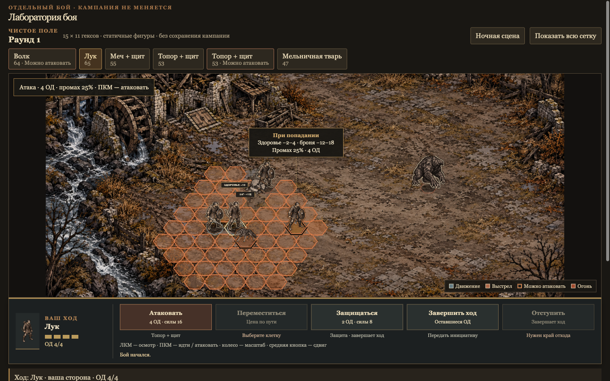

Видимая зона выстрела
Заливка и границы клеток читаются поверх земли. Зона отражает доступный сейчас выстрел, включая препятствия и оставшиеся ресурсы.
Warwrit / интерфейс боя / 10 октября 2026
Референс на кадрах рабочего прототипа. Статичные фигуры, ясные границы выстрела и панель приказов рядом с полем. Пять полноэкранных концептов для выбора → Предыдущие четыре варианта

Заливка и границы клеток читаются поверх земли. Зона отражает доступный сейчас выстрел, включая препятствия и оставшиеся ресурсы.
Контур и маркер у ног выделяют каждую законную цель. Наведение показывает прогноз. Недоступный враг остаётся доступен для осмотра.
Сдержанный контур, контактная тень и разные маркеры сторон сохраняют тушь и приглушённую палитру. Без анимаций и яркого свечения.
Действующий боец, ОД, цена и доступность приказов находятся у нижнего края поля. Осмотр другой фигуры не меняет того, кто ходит.